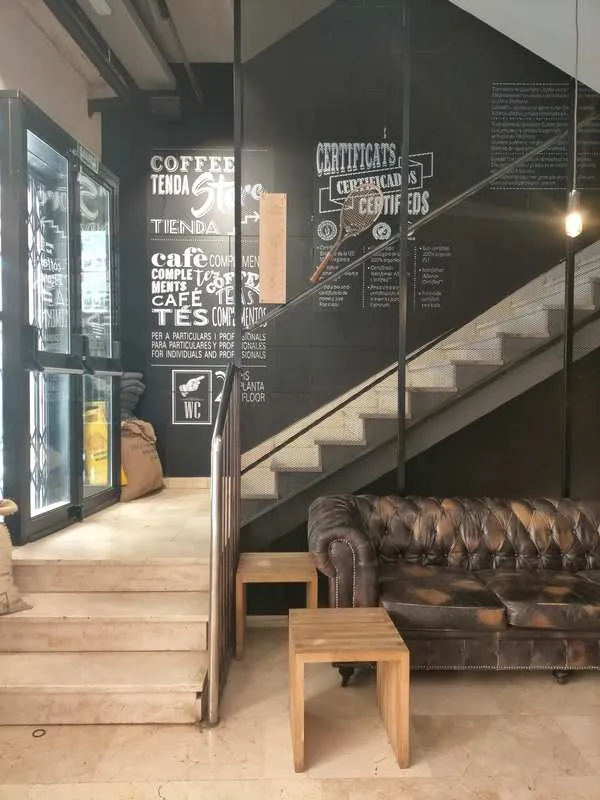
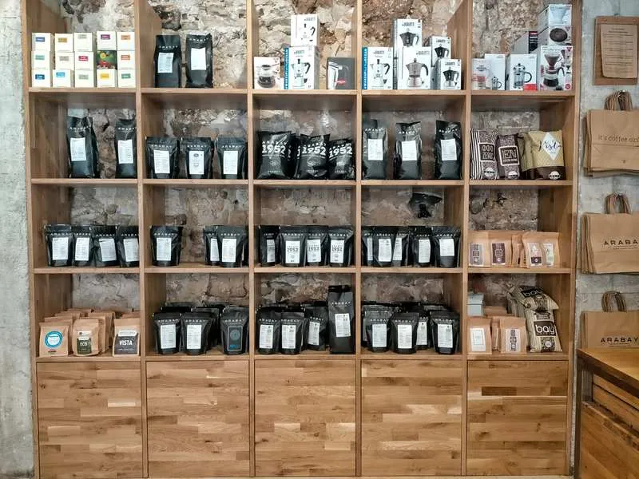
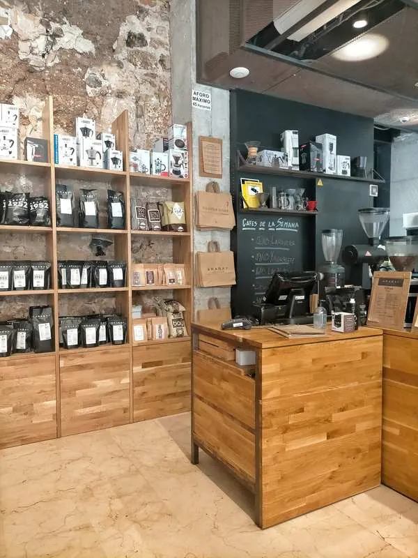
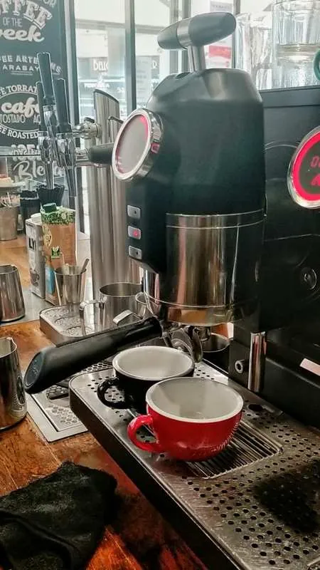
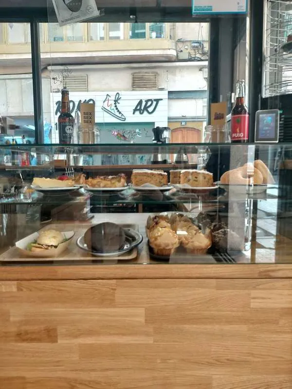
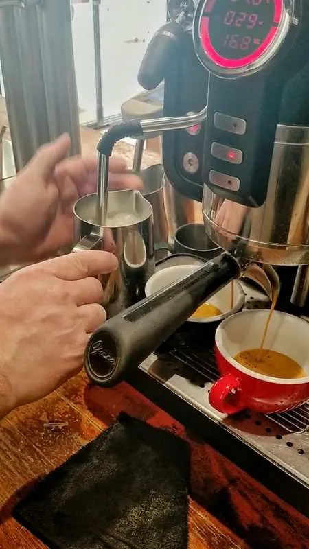
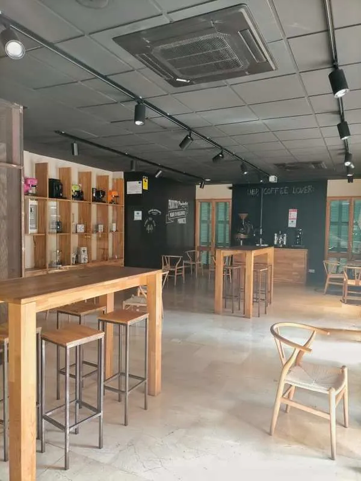

Hace unos años el café de especialidad entró pisando fuerte en Mallorca, y por suerte para los amantes del café cada vez son más las cafeterías que lo ofrecen en Palma.
El café de especialidad es aquel que procede de fincas reguladas por la SCAE (Specialty Coffee Association of Europe), y que obtiene más de 80 puntos sobre 100 en su escala de calidad. De lo mejorcito, vamos.
Una de las más top es Arabay, una cafetería de especialidad situada en la zona de la Plaza Mayor de Palma, aunque con base en Lloret de Vistalegre, que además de tener una de las mejores variedades de café de la isla, es también tostador (uno de los pioneros a nivel nacional), tienda y academia, por lo que se ha convertido en uno de los mayores referentes en la isla para todos los amantes del café y baristas.



Store
En su tienda podéis encontrar una variedad alucinante de cafés arábicos; algunos de ellos son habituales en la tienda mientras que otros se van cambiando por variedades nuevas, y en su mayoría son seleccionados mediante el trato directo con las fincas en origen, sin intermediarios de ningún tipo. Todos sus productos son sostenibles y de comercio justo, y muchos de ellos son también ecológicos.
Además de cafés también venden prácticamente cualquier cosa que se os ocurra relacionada con su preparación o degustación: cafeteras de todo tipo, filtros, tazas, envases, libros...
También tienen un puesto en el Mercado del Olivar y disponen de tienda online, así que ya no hay excusa posible para no disfrutar del mejor café también en casa.



House
Su cafería es muy chula, con paredes de piedra vista, techos altos y una decoración de estilo industrial muy llamativa. Tienen también terraza y servicio de take away, especialmente destacables ahora que los espacios interiores están cerrados.
Siempre tienen cuatro molinillos preparados con cuatro variedades diferentes de café: uno con su café de la semana, un café blend, café descafeinado y café filtro personalizado.
La máquina con la que preparan el café es la Opera, una máquina creada por baristas que permite tener un gran control sobre variables como la temperatura, la presión del agua y el tiempo de infusión, lo que combinado con la calidad de sus cafés y con la profesionalidad de sus baristas da como resultado la perfección hecha café (o por lo menos lo que más se le acerca).
Apuestan por los productos km 0, por lo que también podréis encontrar cervezas o refrescos artesanales de Mallorca, y el agua que utilizan para sus cafés es de producción propia gracias a su sistema de filtrado, lo que les permite tener un agua con una calidad y sabor ideales para la preparación de sus cafés de especialidad.
También tienen un montón de infusiones diferentes, Chai latte (me chifla), tostadas, llonguets y una buena selección de bollería, así que si os gusta el buen café acompañado de algo rico para picar Arabay es un must en Palma.

Academy
Arabay es el único centro homologado de formación para baristas de la isla. Ofrecen desde cursos básicos sobre preparación de café en casa hasta cursos generales de barista o más específicos como el de latte art, destinados a profesionales que quieran mejorar sus conocimientos en la materia o a amantes del café en general. También ofrecen catas de café y alquilan su sala para eventos con catering.
DATOS DE CONTACTO
Teléfono: 871 037 996
Dirección: Carrer del Sindicat, 5 (Esquina con Plaza Mayor), y también en el Mercado del Olivar - Palma